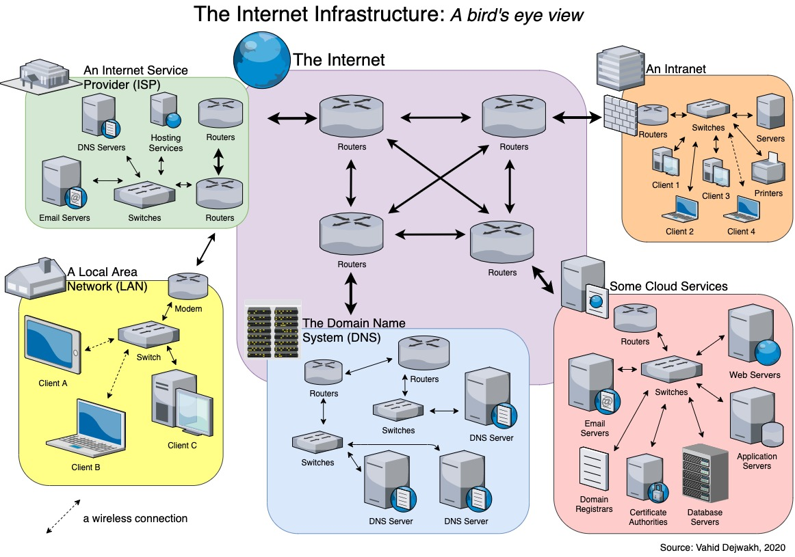

1- Internet Infrastructure
1.1- What is Internet Infrastructure?

The internet infrastructure is an array of remote hardware and software working to send and receive information to various systems.
Its basic components include data centers, networks, servers, storage devices, and server applications. The hardware may be localized in specific countries,
but the network infrastructure spans international boundaries
to make the internet a worldwide phenomenon available in any region that has a functioning localized network.
The home of the internet infrastructure is the data center, a secure building housing computer equipment and
network connectivity devices. It is staffed by a full-time team of operators and equipped with enough power to run and cool the equipment.
It also has systems to regulate climate, suppress fires, and prevent unauthorized access.
1.2-How Internet Infrastructure Works
One of the greatest things about the internet is that nobody really owns it. It is a global collection of networks, both big and small.
These networks connect in many different ways to form the single entity that we know as the internet.
Since its beginning in 1969, the internet has grown from four host computer systems to tens of millions. However, just because nobody owns the internet,
it doesn't mean it is not monitored and maintained in different ways. The Internet Society,
a nonprofit group established in 1992, oversees the formation of the policies and protocols that define how we use and interact with the internet.
1.3-Evolution of the Internet Infrastructure
Simply defined, the Internet is a very large network of many other computer networks.
The United States Government played an important role in creating what eventually became the Internet during the 1960s. The Department of Defense Advanced Research Projects Agency (DARPA) funded early research into packet switching technology, which computer systems use to communicate. This approach differed from the way telephone systems transmitted data. Packet switching technology led to the development of ARPANET, the Internet's predecessor.
DARPA, the Defense Communications Agency, and Stanford University supported the development of important communication protocols called Transmission Control Protocol and Internet Protocol (TCP/IP) that define the way information is transmitted on the Internet.
TCP/IP became the standard communication protocol used on ARPANET in January of 1983. Generally speaking, communication protocols like TCP/IP are the means by which devices understand and agree upon how and when they will share information with one another.
In 1990, ARPANET was succeeded by NSFNET, which the National Science Foundation created in 1987 to link university computer science departments across the United States. The NSF established regional networks that aggregated traffic from the universities and accordingly fed it into the "back-bone" of NSFNET. The universities that connected to the NFSNET backbone further connected other networks of colleges and individuals.
In 1995, the NSF did away with its backbone and turned what had been NSFNET over to the commercial sector. It created network access points (NAPs) that made it possible for telecommunication companies like MCI and Sprint to establish Internet backbones of their own, to which national or regional Internet Service Providers (ISPs) could connect. Organizations or individuals seeking Internet access then had to obtain it directly from a NAP, or subscribe to ISPs like America Online (AOL) with NAP access.
2- History of the web
2.1- Where the Web was born
 Tim Berners-Lee, a British scientist, invented the World Wide Web (WWW) in 1989, while working at CERN. The Web was originally conceived and developed to meet the demand for automated information-sharing between scientists
in universities and institutes around the world.
CERN is not an isolated laboratory,
but rather the focal point for an extensive community that includes more than 17 000 scientists from over 100 countries.
Although they typically spend some time on the CERN site, the scientists usually work at universities and national laboratories in their home countries.
Reliable communication tools are therefore essential.The basic idea of the WWW was to merge the evolving technologies of computers, data networks and hypertext into a powerful and easy to use global information system.
Tim Berners-Lee, a British scientist, invented the World Wide Web (WWW) in 1989, while working at CERN. The Web was originally conceived and developed to meet the demand for automated information-sharing between scientists
in universities and institutes around the world.
CERN is not an isolated laboratory,
but rather the focal point for an extensive community that includes more than 17 000 scientists from over 100 countries.
Although they typically spend some time on the CERN site, the scientists usually work at universities and national laboratories in their home countries.
Reliable communication tools are therefore essential.The basic idea of the WWW was to merge the evolving technologies of computers, data networks and hypertext into a powerful and easy to use global information system.
2.1.1- How the Web began
Tim Berners-Lee wrote the first proposal for the World Wide Web in March 1989 and his second proposal in May 1990. Together with Belgian systems engineer Robert Cailliau, this was formalised as a management proposal in November 1990. This outlined the principal concepts and it defined important terms behind the Web. The document described a "hypertext project" called "WorldWideWeb" in which a "web" of "hypertext documents" could be viewed by browsers.By the end of 1990, Tim Berners-Lee had the first Web server and browser up and running at CERN, demonstrating his ideas. He developed the code for his Web server on a NeXT computer. To prevent it being accidentally switched off,
the computer had a hand-written label in red ink: "This machine is a server. DO NOT POWER IT DOWN!!
Websites for use by the general public began to emerge in 1994. This spurred competition in server and browser software, highlighted in the Browser wars which was initially dominated by Netscape Navigator and Internet Explorer. Following the complete removal of commercial restrictions on Internet use by 1995, commercialization of the Web amidst macroeconomic factors led to the dot-com boom and bust in the late 1990s and early 2000s.
The features of HTML evolved over time, leading to HTML version 2 in 1995, HTML3 and HTML4 in 1997, and HTML5 in 2014. The language was extended with advanced formatting in Cascading Style Sheets (CSS) and with programming capability by JavaScript. AJAX programming delivered dynamic content to users, which sparked a new era in Web design, styled Web 2.0. The use of social media, becoming common-place in the 2010s, allowed users to compose multimedia content without programming skills, making the Web ubiquitous in every-day life.
3- Internet Statics
3.1- In the Middle east:

In the Middle East, there are an estimated 206,379,130 Internet users,
and between 2000 and 2020 the region shows an impressive
Internet use growth rate of 6,182.9 %.
In Arabic computational linguistics, Sakhr has successfully transformed
its research in Natural Language Processing (NLP) into industry-first
commercial software and solutions.
3.1.1- In Lebanon:
Lebanons internet penetration rate stood at 89.3 percent of the total population at the start of 2022.
Note: due to significant revisions in the base data, we regret that were currently unable to offer figures for the change in internet users over time in Lebanon.
For perspective, these user figures reveal that 716.9 thousand people in Lebanon did not use the internet at the start of 2022, meaning that 10.7 percent of the population remained offline at the beginning of the year.
However, issues relating to COVID-19 continue to impact research into internet adoption, so actual internet user figures may be higher than these published numbers suggest
Internet connection speeds in Lebanon in 2022
Data published by Ookla indicate that internet users in Lebanon could have expected the following internet connection speeds at the start of 2022:
Median mobile internet connection speed via cellular networks: 21.30 Mbps.
Median fixed internet connection speed: 7.67 Mbps.
Ooklas data reveals that the median mobile internet connection speed in Lebanon decreased by 9.38 Mbps (-30.6 percent) in the twelve months to the start of 2022.
Meanwhile, Ooklas data shows that fixed internet connection speeds in Lebanon increased by 2.78 Mbps (+56.9 percent) during the same period.